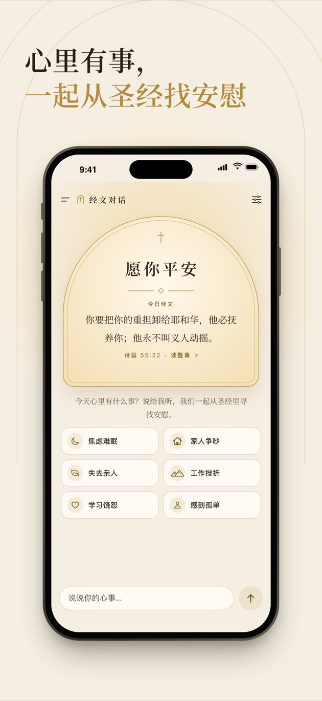
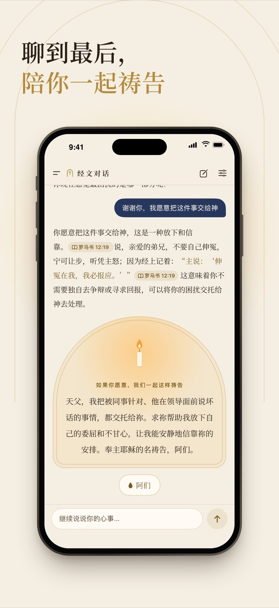

像牧者一样倾听的圣经 AI，全程在你的 iPhone 上
说出你的心事，经文对话会先听懂你，再用和合本的经文回应你，聊到合适的时候陪你一起祷告。对话不上传，没有账号、广告和追踪；免费试用 3 天，之后一次性买断，不是订阅。
在 App Store 下载
需要 iOS 18 或以上、6 GB 以上内存的 iPhone


它和别的圣经 App 有什么不一样
- 一段真正的对话：不是一次给你一串经文，而是像牧者那样一来一回地聊，经文自然地融在话里，聊到合适的时候带你一起祷告。
- 经文准确：只引用和合本、World English Bible、King James Version 的原文，引错的地方会自动换回原文；点开出处能看到前后几节。
- 完全离线、不上传：AI 模型在手机上运行，对话不会离开这台 iPhone。
- 难的时候先顾到你：提到伤害自己的念头时，先给出你所在地区的求助热线，再继续陪你说话。
- 简体、繁体、英文：用哪种语言说，就用哪种语言回答。
常见问题
对话在哪里处理？
在你的 iPhone 上。对话用的 AI 模型（Google Gemma 4）和检索模型都在手机上运行，不经过任何服务器。
对话会存到服务器上吗？
不会，我们没有服务器。对话记录只保存在这台 iPhone 上，不进 iCloud 和电脑备份，锁屏时加密，可以随时删除一段或全部删除。
会拿我的对话去训练 AI 吗？
不会。你的对话从来不会发给我们，我们看不到，也不可能拿去训练。
用的是什么译本？
中文用和合本（简体、繁体），英文用 World English Bible 和 King James Version，都是公有领域的译本。回答里引用的经文会和 App 里的原文逐字核对，引错的自动换回原文。
多少钱？
免费下载，可以先免费试用 3 天，不限次数。之后一次性购买（美国 $2.99，其他地区以 App Store 显示为准）就能一直用下去，不是订阅，不会自动扣费。
哪些 iPhone 能用？
需要 iOS 18 或以上、6 GB 以上内存的 iPhone（iPhone 13 Pro、iPhone 14 或更新的机型）。AI 模型约 3.7 GB，iOS 26 起随 App 一起从 App Store 下载，建议连接 Wi-Fi。
能代替牧者或心理咨询师吗？
不能，经文对话是灵修辅助。如果你有伤害自己的念头，请马上联系身边信任的人、当地的求助热线或急救电话。